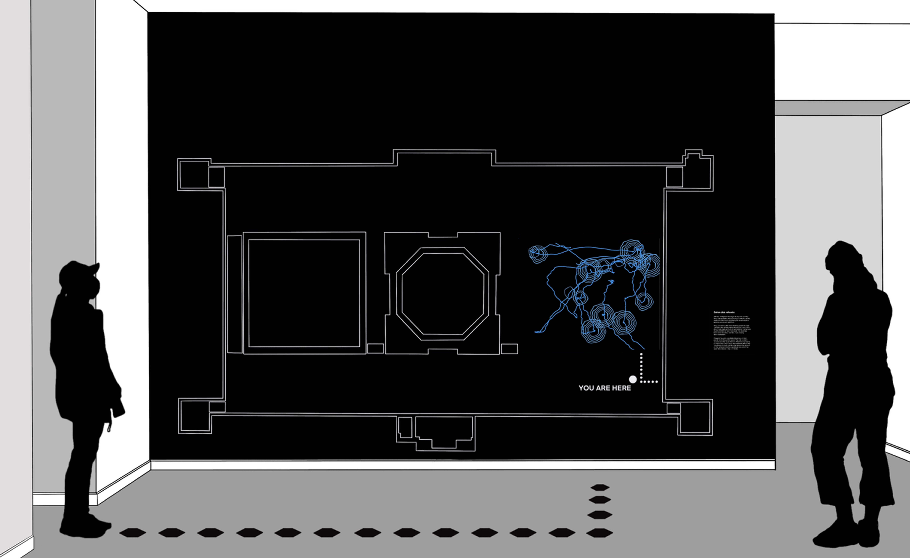

Creepers @ Vancouver Art Gallery
Creepers, an AI-art installation, was awarded the Gerri Sinclair Award for Innovation in Digital Media. It was part of a larger collection of works featured in the 2021 Imitation Game exhibit, which spanned 10 months at the Vancouver Art Gallery — seeing roughly 830 daily gallery goers. The exhibit explored the transformative influence of Artificial Intelligence (AI) on the development and production of visual culture. My project team was approached by the gallery’s head curators to design, develop, and implement an installation.

The Challenge
There was an exhibit room where the curators wanted to track visitors' movements throughout the space, named Salon des Refusés. The tricky part was creating an installation piece that balanced being functional, noninvasive, and unimposing to visitors' experience.
Objectives
- Create a functional art piece that could be implemented in the Imitation Game exhibit
- Non-invasive data gathering method
- A visually impactful representation of visitor data
Research question
How might we capture each visitor's interaction with art pieces and display their preferences in a visually-impactful and thought-provoking way, without impeding their experience?
Synthesis workshop
I outlined our goals, delegated key research directions, and facilitated the research gathering phase for the team. In this session, we synthesized over 60 sources, including scholarly articles, journals, and AI art references.

User personas
Following discovery, I led persona and journey mapping. There was a clear distinction between AI novices and aficionados.


User journey
The user personas helped frame each visitor type's journey from pre-visit to post-visit.

Early iterations
One key component was occlusion in camera tracking systems.
Final exploration
The final concept used biomimicry, inspired by natural movement systems.


In situ
It was rewarding to observe real visitor interaction with the installation.

The aim was to make visitor data understandable and visually engaging regardless of background.